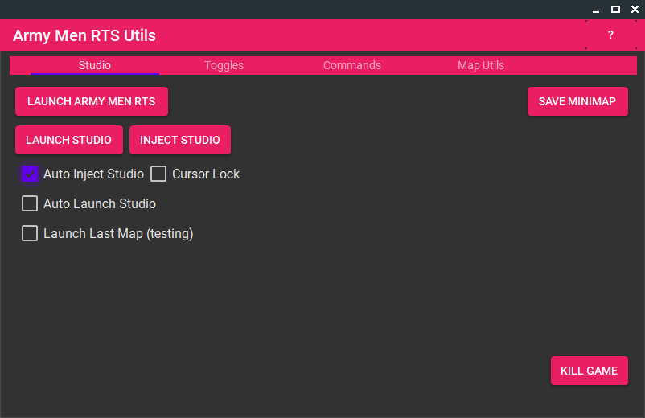

The studio editor is the program you'll need to get access to all the mission editing tools available in the game. Let's start by getting it set up.
Unlike Dark Reign 2, the Studio Editor for Army Men RTS was never made available by any means, and was left locked down within the game. But since then, the community has made it available with some magic trickery.
Many assets needed to be replaced from the vanilla game in order to get this unlocked editor working. This may make multiplayer compatibility impracial or completely impossible. As such, it's highly recommended you have a fresh install of the game in a seperate directory. This shouldn't be difficult if you purchased your copy through GOG, but you may have difficulty creating a 2nd Steam install.
And that's all! The studio can be launched through the executable or through a new button at the top-right of the main menu.
If you have any issues downloading the files, try downloading directly from the ExF forum post, where
Remember, once everything is installed, the studio can only be accessed by opening the launcher first and having "Auto Inject Studio" enabled.
